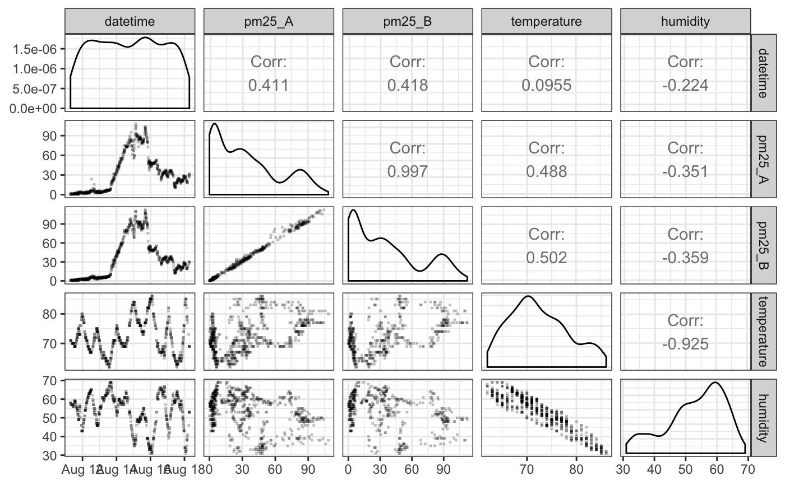

R/pat_scatterplot.R
pat_scatterplot.RdCreates a multi-panel scatterplot comparing all variables in the pat object. If any variables have no valid data, they are omitted from the plot.
The list of available parameters include:
datetime -- measurement time
pm25_A -- A channel PM2.5 (ug/m3)
pm25_A -- A channel PM2.5 (ug/m3)
temperature -- temperature (F)
humidity -- humidity (%)
uptime -- seconds since last reset
adc0 -- analog input voltage
rssi -- wifi signal strength (dBm)
pat_scatterplot(pat = NULL, parameters = c("datetime", "pm25_A", "pm25_B", "temperature", "humidity"), sampleSize = 5000, sampleFraction = NULL, size = 0.5, shape = 15, color = "black", alpha = 0.25)
| pat | PurpleAir Timeseries pat object. |
|---|---|
| parameters | Vector of parameters to include. |
| sampleSize | Integer to determine sample size. |
| sampleFraction | Fractional sample size. |
| size | Size of points. |
| shape | Symbol to use for points. |
| color | Color of points. |
| alpha | Opacity of points. |
Multi-panel ggplot comparing all parameters.
# \donttest{ pat <- example_pat %>% pat_filterDate(20180811,20180818) pat_scatterplot(pat, sampleSize = 1000)#> Warning: Removed 261 rows containing missing values#> Warning: Removed 238 rows containing missing values#> Warning: Removed 261 rows containing missing values#> Warning: Removed 261 rows containing missing values#> Warning: Removed 261 rows containing missing values (geom_point).#> Warning: Removed 261 rows containing non-finite values (stat_density).#> Warning: Removed 499 rows containing missing values#> Warning: Removed 261 rows containing missing values#> Warning: Removed 261 rows containing missing values#> Warning: Removed 238 rows containing missing values (geom_point).#> Warning: Removed 499 rows containing missing values (geom_point).#> Warning: Removed 238 rows containing non-finite values (stat_density).#> Warning: Removed 499 rows containing missing values#> Warning: Removed 499 rows containing missing values#> Warning: Removed 261 rows containing missing values (geom_point).#> Warning: Removed 261 rows containing missing values (geom_point).#> Warning: Removed 499 rows containing missing values (geom_point).#> Warning: Removed 261 rows containing non-finite values (stat_density).#> Warning: Removed 261 rows containing missing values#> Warning: Removed 261 rows containing missing values (geom_point).#> Warning: Removed 261 rows containing missing values (geom_point).#> Warning: Removed 499 rows containing missing values (geom_point).#> Warning: Removed 261 rows containing missing values (geom_point).#> Warning: Removed 261 rows containing non-finite values (stat_density).# }